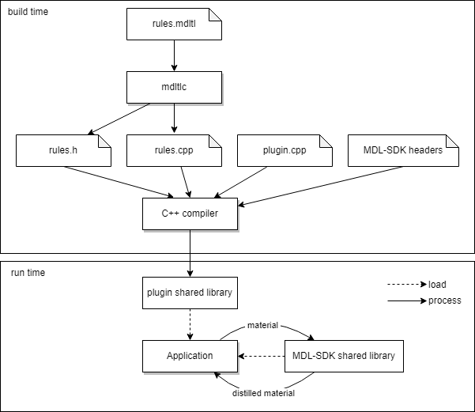

Some applications working with MDL materials might not be capable of processing general materials with all MDL features. For example, a renderer might not be able to handle transparency, or it might require that materials have a fixed structure so that they can be processed efficiently. Renderers supporting different levels of detail for materials, or simpler materials to support real-time rendering, can benefit from working with simplified materials.
The Distiller component, which is part of the MDL SDK API, enables applications with limited MDL support or other requirements to load general MDL materials, transforming them into different (often simpler) materials and then use them instead of the original materials.
The goal of distilling is to transform general material graphs into graphs of a fixed structure that is suitable for certain applications. The distilling process takes a compiled material (mi::neuraylib::ICompiled_material) as input, modifies its definition by applying transformation rules, and returns a new compiled material with the transformed definition. Transformation rules are either built into the Distiller or are provided by Distiller plugins.
The rules that are applied, their application order, and the structure of the resulting material are defined by Distiller targets. A Distiller plugin can provide one or more targets, and the application can select the target to apply using the target's name. For example, by default the Distiller includes the targets "diffuse" (which only uses a single diffuse BSDF for the output material), "transmissive_pbr" (a more expressive standard PBR material model), and others.
Depending on the target, the distilled material can differ to a small or large degree from the input. For example, the "diffuse" target is much simpler than the target "transmissive_pbr", and the rendered images of the latter will be much closer to rendered images of the original input material.
Targets are implemented by Distiller plugins by using the Distiller rule engine to repeatedly apply transformation rules to nodes in the material graph. Transformation rules are implemented as subclasses of the class mi::mdl::IRule_matcher. These classes for rule-matching can be written by hand, but a more convenient and less error-prone option is to write rules in the MDL Transforamtion Language (MDLTL). MDLTL is a domain-specific language for describing transformations on MDL materials. These transformations are expressed as a set of rules which are compiled to C++ code and are then linked into Distiller plugins.
As an introduction, we will examine the general form of a rule. More details about rules and more examples are in section Rules.
The left-hand side of the rule (before the --> arrow) describes a pattern to match on a node in the material graph. In this case, the pattern matches a microfacet_beckmann_smith_bsdf BSDF node. The right-hand side is an expression that serves as a replacement node. When the Distiller matches the rule, it checks whether the pattern fits the structure of a node. In case it does, the variables in the function call pattern (ru, rv, tint, t and mode) are bound to the corresponding fields of the node, and the right-hand side expression is evaluated. Then the original node is replaced by the new node in the material graph and matching continues. Also note the special pattern _ (underscore) which acts like a wildcard and matches any expression. In this example, the wildcard pattern means that the fourth parameter of the matched node will simply be ignored.
Rule matching and application can be controlled in several ways, as described in the section on Rules.
Distiller rules written in MDLTL need to be compiled into C++ classes and linked into Distiller plugins. The MDL SDK API can load Distiller plugins and automatically makes the targets defined in the plugins available to the Distiller component, which in turn makes them available to the application.
The MDLTL compiler translates rule specifications into C++ classes. The MDLTL input files are compiled ahead of time and linked into the plugin(s) using them. Depending on the target for which a plugin is invoked, it will apply rules in a certain order and can also perform other steps between rule applications. The example Distilling target example contains a Distiller plugin and an MDLTL file. It illustrates how the plugin and the generated C++ code interact with each other.
The following diagram shows how MDLTL files are compiled to C++, linked into plugins and then loaded at runtime into applications to perform the distilling process.

First, at plugin build time, MDLTL files are compiled by the MDLTL compiler (mdltlc) into C++ source code files. This code is compiled by a C++ compiler into a shared object, using the Distiller plugin header file for the mi::mdl::IRule_matcher class from which rule sets inherit, and the Distiller plugin API which is used by the generated code. Each MDLTL file results in a C++ .cpp and .h file, and several of these files can be compiled and linked together with a plugin module, resulting in a shared object (.so/.dll) file.
At runtime, the application uses the MDL SDK API in order to distill materials. First, the application loads the MDL SDK API shared object and the distiller plugin(s) for the target(s) it needs. When calling into the SDK functions for distilling, the MDL SDK API calls into the Distiller module which in turn calls into the loaded Distiller plugin for the used target. After Distilling is finished, the result material is passed back from the Distiller plugin through the Distiller module and MDL SDK API to the application. Depending on its needs, the application can then use the distilled material for rendering or further processing.
This section describes how the MDLTL compiler mdltlc is used to compile MDLTL files into C++ source code.
mdltlc is invoked with one or more MDLTL filenames as command line arguments. Without any options, the input files are checked, but no output is produced. When the option --generate is given, each MDLTL file is compiled into two files: one C++ source code file with extension .cpp and one header file with extension .h, both having the file name (without the original extension) of the input MDLTL file. The output files are written to the current directory, or the directory given by the --output-dir option.
The --verbosity option can be set to numbers between 0 and 5 to produce different level of debug output.
The --mdl-path option must be given when a non-standard MDL module is imported by a rule set. If given, the directory is added to the MDL search path.
The --normalize-mixers option switches on mixer normalization. See Mixer call normalization for details on this feature.
The --all-errors causes the compiler to print out all info, warning, error messages. By default, only the first 10 messages are shown.
The --warn option switch on extra warnings, depending on the argument:
non-normalized-mixers: Print a warning when a mixer call in a pattern is not normalized.overlapping-patterns: Print a warning when an overlapping is detected.Note that these options cannot warn about all possible cases, because the effect non-normalized mixers or overlapping patterns can depend on run-time input.
mdltlc understands the following command line options:
Usage: mdltlc [options] modules Options are: -? This help. -v level verbosity level, 0 is quiet (default) --output-dir=DIR generate files in the given directory. --mdl-path=DIR add the given directory to the MDL search path. --generate generate .h/.cpp files (off by default). --normalize-mixers enable mixer normalization (off by default). --all-errors do not cut off list of error messages (off by default). --warn=non-normalized-mixers emit warnings for mixer call patterns that are not normalized. --warn=overlapping-patterns emit warnings for possibly overlapping patterns.
The next page MDLTL Specification documents the syntax and semantics of MDLTL files.